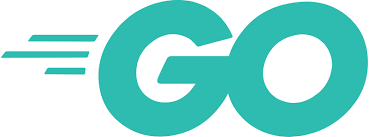

大学4年間で、JavaやPython、JavaScriptなどのプログラミング言語を学び、Webアプリケーションやモバイルアプリの開発に取り組みました。 ReactやFlutter、Firebase、Supabaseなどを活用し、フロントエンドからバックエンド、データベースまで幅広い技術を習得しました。 卒業研究では、服薬管理アプリや卒業論文発表管理システムの設計・開発を行い、実践的な開発経験を積みました。 また、インターンシップではGo言語によるWeb API開発やDocker、CIなどを学び、開発から運用までの一連の流れを理解しました。 さらに、プログラミング教室でのアルバイトを通じて、技術を相手に分かりやすく伝える力や、課題に主体的に取り組む姿勢を身につけました。

Frontend
React, TypeScript, Tailwind
Backend
Go, Java, Python,
Mobile
Flutter
Database
Supabase, Firebase